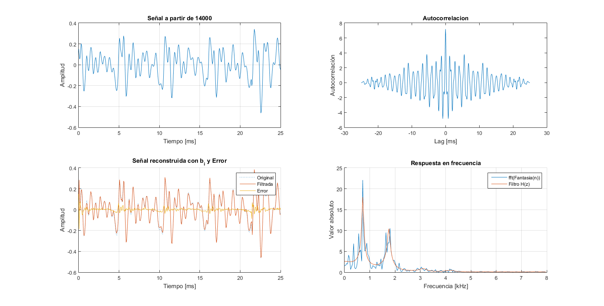
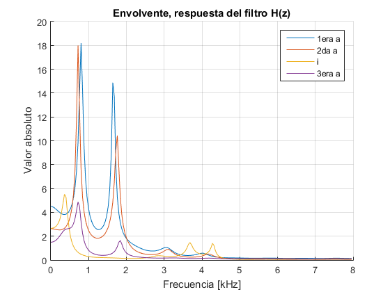
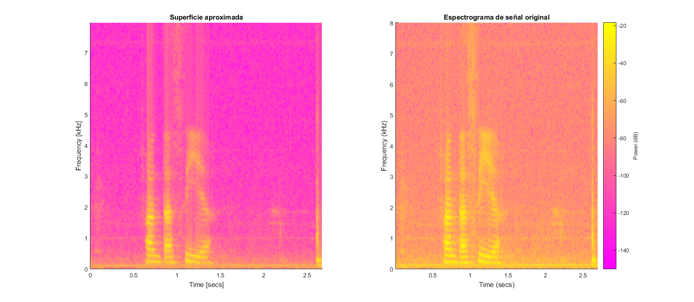
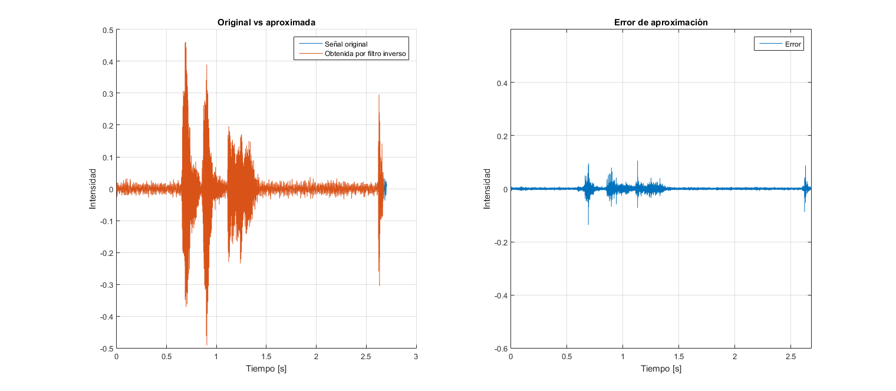
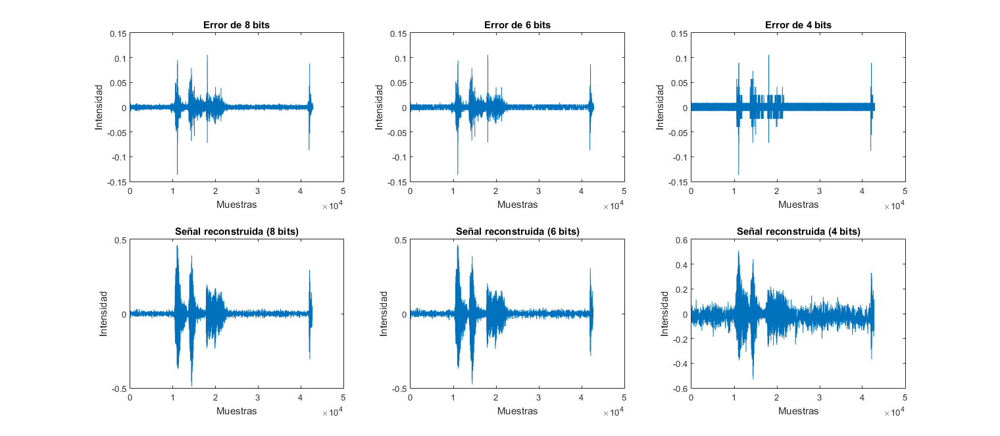
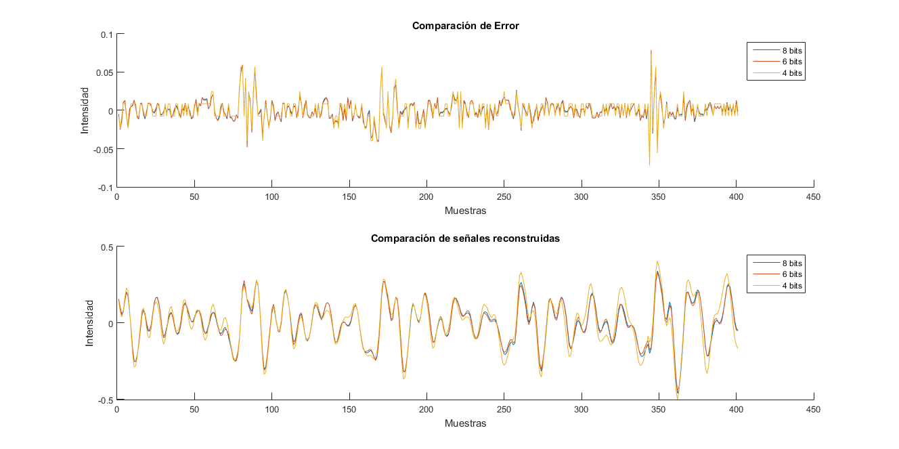

clear all, close all;
audio_orig = audioread('.\fantasia.wav');
info_wav = audioinfo('.\fantasia.wav');
Fs = info_wav.SampleRate;
Ts = 1/Fs;
L = 0.025;
N = L*Fs;
L_filtro = 0.01;
M = L_filtro/Ts;
muestra_inicial = 14000;
muestra_final = 14000+N;
audio = audio_orig(muestra_inicial:muestra_final);
[B,G,corr,s_filt,S,S_aprox,error] = calc_coef(N, audio,0);
plotear(audio,Ts,Fs,corr,S,S_aprox,s_filt,error)
muestra_inicial = 11000;
muestra_final = 11000+N;
audio1 = audio_orig(muestra_inicial:muestra_final);
[B1,G1,corr1,s_filt1,S1,S_aprox1,error1] = calc_coef(N, audio1,0);
muestra_inicial = 14000;
muestra_final = 14000+N;
audio1 = audio_orig(muestra_inicial:muestra_final);
[B2,G2,corr2,s_filt2,S2,S_aprox2,error2] = calc_coef(N, audio1,0);
muestra_inicial = 18840;
muestra_final = 18840+N;
audio1 = audio_orig(muestra_inicial:muestra_final);
[B3,G3,corr3,s_filt3,S3,S_aprox3,error3] = calc_coef(N, audio1,0);
muestra_inicial = 21400;
muestra_final = 21400+N;
audio1 = audio_orig(muestra_inicial:muestra_final);
[B4,G4,corr4,s_filt4,S4,S_aprox4,error4] = calc_coef(N, audio1,0);
figure
hold on
fourier_len = floor(length(S)/2);
f = ((0:fourier_len-1)/2*Fs/fourier_len)';
plot(f/1000, abs(S_aprox1(1:fourier_len)))
plot(f/1000, abs(S_aprox2(1:fourier_len)))
plot(f/1000, abs(S_aprox3(1:fourier_len)))
plot(f/1000, abs(S_aprox4(1:fourier_len)))
hold off
legend('1era a','2da a','i','3era a')
title('Envolvente, respuesta del filtro H(z)')
xlabel('Frecuencia [kHz]')
ylabel('Valor absoluto')
grid
matB = []; vectG = []; matS_aprox = []; error_total = []; s_filt_total = []; zie=0;zis=0;
for i=1:M:length(audio_orig)-N
muestra_inicial = i;
muestra_final = i+N;
audio = audio_orig(muestra_inicial:muestra_final);
[B,G,corr,s_filt,S,S_aprox,error,zfe,zfs] = calc_coef_total(N, M, audio,zie,zis);
matB = [matB B];
vectG = [vectG G];
matS_aprox = [matS_aprox S_aprox];
error_total = [error_total; error];
s_filt_total = [s_filt_total; s_filt];
zie = zfe;
zis = zfs;
end
figure('units','normalized','outerposition',[0.1 0.2 0.8 0.7])
subplot(1,2,1)
t_surf = 0:L_filtro:267*L_filtro;
matS_aprox = matS_aprox(1:size(matS_aprox,1)/2,:);
h = surf(t_surf,f/1000,20*log10(abs(matS_aprox)),'EdgeColor','none');
view(2)
xlabel('Time [secs]')
ylabel('Frequency [kHz]')
axis([0 2.675 0 inf])
title('Superficie aproximada')
subplot(1,2,2)
ventana = N;
dft_pts = N;
noverlap = floor(N/2);
spectrogram(audio_orig,ventana,noverlap,dft_pts,Fs,'power','yaxis');
colormap('spring')
title('Espectrograma de señal original')
figure('units','normalized','outerposition',[0.1 0.2 0.8 0.7])
subplot(1,2,1)
hold on
plot((0:length(audio_orig)-1)*Ts, audio_orig)
plot((0:length(s_filt_total)-1)*Ts, s_filt_total)
hold off
legend('Señal original','Obtenida por filtro inverso');
xlabel('Tiempo [s]')
ylabel('Intensidad')
title('Original vs aproximada')
grid
subplot(1,2,2)
plot((0:length(error_total)-1)*Ts, error_total)
legend('Error')
xlabel('Tiempo [s]')
ylabel('Intensidad')
title('Error de aproximación')
grid
axis([0 inf -0.6 0.6])
audiowrite('.\reconstruida.wav',s_filt_total,16000);
min_e = min(error_total);
max_e = max(error_total);
error_norm_256 = (error_total-min_e)/(max_e-min_e)*255;
error_norm_64 = (error_total-min_e)/(max_e-min_e)*63;
error_norm_16 = (error_total-min_e)/(max_e-min_e)*15;
error_norm_256 = round(error_norm_256,0);
error_norm_64 = round(error_norm_64,0);
error_norm_16 = round(error_norm_16,0);
error_256 = error_norm_256*(max_e-min_e)/255+min_e ;
error_64 = error_norm_64*(max_e-min_e)/63+min_e;
error_16 = error_norm_16*(max_e-min_e)/15+min_e;
figure('units','normalized','outerposition',[0.1 0.2 0.8 0.7])
subplot(2,3,1)
plot(error_256);
title('Error de 8 bits')
xlabel('Muestras')
ylabel('Intensidad')
subplot(2,3,2)
plot(error_64);
title('Error de 6 bits')
xlabel('Muestras')
ylabel('Intensidad')
subplot(2,3,3)
plot(error_16);
title('Error de 4 bits')
xlabel('Muestras')
ylabel('Intensidad')
s_recons_256 = [];
s_recons_64 = [];
s_recons_16 = [];
j=0;
zia = zeros(1,max(1,length([0 B']))-1.);
zib = zeros(1,max(1,length([0 B']))-1.);
zic = zeros(1,max(1,length([0 B']))-1.);
for i=1:M:length(error_256)-M
j=j+1;
[a,zia] = filter(1,[1 -(matB(:,j))'],error_256(i:i+M-1),zia);
[b,zib] = filter(1,[1 -(matB(:,j))'],error_64(i:i+M-1),zib);
[c,zic] = filter(1,[1 -(matB(:,j))'],error_16(i:i+M-1),zic);
s_recons_256 = [s_recons_256; a];
s_recons_64 = [s_recons_64; b];
s_recons_16 = [s_recons_16; c];
end
subplot(2,3,4)
plot(s_recons_256)
title('Señal reconstruida (8 bits)')
xlabel('Muestras')
ylabel('Intensidad')
subplot(2,3,5)
plot(s_recons_64)
title('Señal reconstruida (6 bits)')
xlabel('Muestras')
ylabel('Intensidad')
subplot(2,3,6)
plot(s_recons_16)
title('Señal reconstruida (4 bits)')
xlabel('Muestras')
ylabel('Intensidad')
audiowrite('.\reconstruida_256.wav',s_recons_256,16000);
audiowrite('.\reconstruida_64.wav',s_recons_64,16000);
audiowrite('.\reconstruida_16.wav',s_recons_16,16000);
disp('Punto 6 (Ahorro(Error) [%] respecto 16 bits):')
disp('8 bits: (16-8)/16*100 = 50%')
disp('6 bits: (16-6)/16*100 = 62.5%')
disp('4 bits: (16-4)/16*100 = 75%')
disp('-------')
disp('Muestras = 43266')
disp('Peso audio = 64bits*43266 = 346,128 kB');
disp('Peso error + coef: = (8bits + 32bits)*43266=216,33 kB')
disp('Ahorro LPC(8 bits) = (346-216)/346*100 = 37,5%')
disp('Ahorro LPC(6 bits) = 40,6%')
disp('Ahorro LPC(4 bits) = 43,75%')
disp('Los coeficientes se asumen de simple precisión (32 bits).')
figure('units','normalized','outerposition',[0.1 0.2 0.7 0.7])
subplot(2,1,1)
hold on
plot(error_256(14000:14400))
plot(error_64(14000:14400))
plot(error_16(14000:14400))
hold off
title('Comparación de Error')
xlabel('Muestras')
ylabel('Intensidad')
legend('8 bits','6 bits','4 bits')
subplot(2,1,2)
hold on
plot(s_recons_256(14000:14400))
plot(s_recons_64(14000:14400))
plot(s_recons_16(14000:14400))
hold off
title('Comparación de señales reconstruidas')
xlabel('Muestras')
ylabel('Intensidad')
legend('8 bits','6 bits','4 bits')
Punto 6 (Ahorro(Error) [%] respecto 16 bits):
8 bits: (16-8)/16*100 = 50%
6 bits: (16-6)/16*100 = 62.5%
4 bits: (16-4)/16*100 = 75%
-------
Muestras = 43266
Peso audio = 64bits*43266 = 346,128 kB
Peso error + coef: = (8bits + 32bits)*43266=216,33 kB
Ahorro LPC(8 bits) = (346-216)/346*100 = 37,5%
Ahorro LPC(6 bits) = 40,6%
Ahorro LPC(4 bits) = 43,75%
Los coeficientes se asumen de simple precisión (32 bits).
     